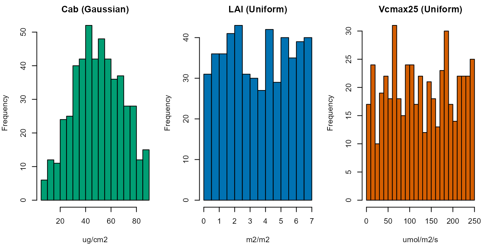

Trait & LUT Glossary
trait-glossary.RmdSCOPEinR::get.SCOPE() reads one LUT row with ~65 columns
– leaf biochemistry, photosynthesis, fluorescence/NPQ, canopy structure,
soil, aerodynamics, and meteorology, all at once. This page is the field
guide to that row: what every variable physically means, its unit, its
realistic range, and its default – taken directly from the package’s own
inputs_SCOPE.csv (not re-typed, so it can’t drift out of
sync).
For how getLUT.SCOPE() turns this table into
random samples
(Uniform/Gaussian/Fixed sampling,
correlating two variables), see Getting LUTs for SCOPE – this page is
the meaning of each variable, that page is the
mechanics of sampling it. For SCOPE’s own run-time
numerical/solver options (iteration limits, convergence tolerances – not
plant/soil/meteo traits at all), see Tutorial 00.
path_input <- system.file("input", package = "SCOPEinR")
inputLUT <- read.table(file.path(path_input, "inputs_SCOPE.csv"), header = TRUE, sep = ",")1. SCOPE’s models at a glance
get.SCOPE() isn’t one model – it’s five distinct
components chained together, each solving a different piece of physics,
in this order:
| Component | What it does | Depends on |
|---|---|---|
Fluspect-Cx (SCOPE variant)
(getFluspect.Cx.SCOPE()) |
Leaf optics: reflectance/transmittance + fluorescence
excitation-emission matrices, per canopy layer (mSCOPE multi-layer
wrapper: get.fluspect_mSCOPE()). Same PROSPECT/Fluspect
physics as ToolsRTM’s leaf models (see its Parameter
& Trait Glossary) – just the SCOPE-specific wrapper. |
Leaf biochemistry traits (Section 2) |
RTMo (get.RTMo()) |
Optical top-of-canopy BRDF – physically the same turbid-medium idea as fourSAIL, re-implemented to plug into the layers below. Stops at reflectance; assumes no temperature yet. | Fluspect-Cx output + canopy structure (Section 5) + BSM soil |
ebal (get.ebal()) |
The energy balance: iteratively solves leaf and soil temperature so absorbed radiation balances sensible + latent heat, calling the biochemistry model at every candidate temperature. This is what makes SCOPE fundamentally different from PROSAIL/SPART – temperature is solved for, not assumed. | RTMo output + aerodynamic resistances (Section 7) + meteorology (Section 8) |
biochemical (get.biochemical()) |
Leaf-level photosynthesis (Farquhar/Collatz) and fluorescence yield,
given a leaf micro-environment – called repeatedly by ebal
at each candidate temperature, not run standalone. |
Photosynthesis traits (Section 3) + NPQ traits (Section 4) |
RTMf (get.RTMf()) /
RTMz (get.RTMz(), optional) |
Canopy-level fluorescence radiance/flux, and a small zeaxanthin (photoprotection) correction to the TOC spectrum – both derived from the already-solved energy balance, not computed independently. | ebal output + Fluspect-Cx’s fluorescence matrices |
get.SCOPE() runs all five for one LUT row and returns
everything together (data.rad reflectance/fluorescence,
data.fluxes energy balance/photosynthesis). The rest of
this page documents the ~65 input variables these five components read,
grouped by which one consumes them.
2. Leaf biochemistry (PROSPECT-PRO / Fluspect-Cx traits)
These are the same PROSPECT/Fluspect leaf traits ToolsRTM’s
own Parameter
& Trait Glossary covers in full detail (meaning, typical range,
which leaf model reads each one) – SCOPE’s leaf-optics step is literally
getFluspect.Cx.SCOPE() under the hood. Only the
SCOPE-specific range/default/units, straight from
inputs_SCOPE.csv, are repeated here:
| variable | units | lower | upper | Distribution | default |
|---|---|---|---|---|---|
| N | ug cm-2 | 1.5 | 4.5 | Uniform | 1.500 |
| Cab | ug cm-2 | 5.0 | 90.0 | Gaussian | 40.000 |
| Car | ug cm-2 | 0.0 | 25.0 | Uniform | 10.000 |
| Anth | 0.0 | 7.0 | Uniform | 0.000 | |
| LMA | g cm-2 | 0.0 | 0.2 | Uniform | 0.012 |
| EWT | cm | 0.0 | 0.2 | Uniform | 0.009 |
| alpha | 0.0 | 60.0 | Uniform | 40.000 | |
| Cbrown | 0.0 | 1.0 | Uniform | 0.000 | |
| Cs | 0.0 | 1.0 | Uniform | 0.000 | |
| Prot | g cm-2 | 0.0 | 0.0 | Uniform | 0.000 |
| CBC | g cm-2 | 0.0 | 0.0 | Uniform | 0.000 |
| Cx | 0.0 | 1.0 | Uniform | 0.100 | |
| fqe | 0.0 | 0.0 | Fixed | 0.010 |
rho_thermal/tau_thermal (both fixed at
0.01) are the leaf’s thermal-infrared (~8-14 micron)
reflectance/transmittance – leaves are close to blackbody in the TIR, so
these stay near zero and are rarely varied.
3. Photosynthesis (Farquhar/Collatz + Ball-Berry)
The traits
scopeinpython.biochemical/SCOPEinR::get.biochemical()
actually consume, at every candidate leaf temperature during the
energy-balance iteration:
| variable | units | lower | upper | Distribution | default |
|---|---|---|---|---|---|
| Vcmax25 | umol m.2 s.1 | 0.75 | 250.00 | Uniform | 70.000 |
| BallBerrySlope | 1.00 | 20.00 | Uniform | 8.000 | |
| BallBerry0 | 0.01 | 0.05 | Fixed | 0.010 | |
| Type | C3-C4 | 0.00 | 0.00 | Fixed | 3.000 |
| kV | 0.00 | 0.00 | Fixed | 0.640 | |
| Rdparam | 0.00 | 0.00 | Fixed | 0.015 |
-
Vcmax25– maximum carboxylation capacity of Rubisco at 25degC, the single biggest driver of photosynthetic capacity (and therefore fluorescence yield) in the whole model. Low values (<20) are stressed/ senescent canopies; 40-120 is typical healthy crop/forest; the CSV’s full 0.75-250 range covers everything from near-dead tissue to the most productive C4 crops. -
BallBerrySlope/BallBerry0– the Ball-Berry stomatal conductance model:gs = BallBerrySlope * A * RH / Cs + BallBerry0. A steeper slope means stomata track photosynthesis more tightly;BallBerry0is the residual (cuticular) conductance whenA-> 0. -
Type– photosynthetic pathway,"C3"or"C4"(stored here asdefault = 3->"C3"). Changes which Farquhar sub-model (Rubisco-limited vs. PEPcase-limited) is used. -
kV– canopy-depth extinction coefficient forVcmax– real canopies down-regulate photosynthetic capacity in shaded lower leaves, andkVsets how fast. -
Rdparam– dark (mitochondrial) respiration as a fraction ofVcmax25(Rd = Rdparam * Vcmax25).
4. Fluorescence / non-photochemical quenching (NPQ)
The van der Tol et al. (2014) fluorescence-yield model traits, on top
of the leaf’s own fqe (Section 2):
| variable | units | lower | upper | Distribution | default |
|---|---|---|---|---|---|
| Kn0 | 0 | 0 | Fixed | 2.480 | |
| Knalpha | 0 | 0 | Fixed | 2.830 | |
| Knbeta | 0 | 0 | Fixed | 0.114 | |
| Tyear | 0 | 0 | Fixed | 15.000 | |
| beta | 0 | 0 | Fixed | 0.510 | |
| kNPQs | 0 | 0 | Fixed | 0.000 | |
| qLs | 0 | 0 | Fixed | 1.000 | |
| stressfactor | 0 | 0 | Fixed | 1.000 | |
| spectrum | 0 | 0 | Fixed | 1.000 |
-
Kn0/Knalpha/Knbeta– empirical constants shaping how the NPQ rate constantKnresponds to light history (the reversible, photoprotective quenching most leaves show within minutes). -
beta– fraction of absorbed PAR partitioned to Photosystem II (the rest goes to PSI); default 0.51 matches the published SCOPE default. -
kNPQs/qLs/stressfactor– sustained (slow-recovering, stress-related) quenching terms, all defaulted “off” (kNPQs = 0,qLs = 1= fully open PSII,stressfactor = 1= no down-regulation) – set these away from default to simulate a chronically stressed canopy rather than one just responding to instantaneous light. -
Tyear– a growth/acclimation temperature (degC) feeding the biochemical model’s temperature-correction functions. -
spectrum– internal switch selecting which bundled fluorescence/optical parameter set to use; leave at the default1unless told otherwise.
5. Canopy structure
| variable | units | lower | upper | Distribution | default |
|---|---|---|---|---|---|
| LAI | m2 m.2 | 0.1 | 7.0 | Uniform | 3.00 |
| hc | m | 0.5 | 5.0 | Uniform | 2.00 |
| LIDFa | -1.0 | 1.0 | Uniform | -0.35 | |
| LIDFb | -1.0 | 1.0 | Uniform | -0.15 | |
| TypeLidf | 0.0 | 1.0 | Fixed | 1.00 | |
| leafwidth | m | 0.1 | 0.4 | Fixed | 0.10 |
| hspot | 0.0 | 0.0 | Uniform | 0.10 | |
| Cv | 0.2 | 5.0 | Fixed | 1.00 | |
| crowndiameter | 0.5 | 5.0 | Fixed | 1.00 |
LAI,
LIDFa/LIDFb/TypeLidf, and
hspot are exactly the fourSAIL traits ToolsRTM’s glossary
covers (Sections 2-3 there, including the named-LIDF-shape table).
SCOPE-specific additions:
-
hc– canopy height, needed for the aerodynamic-resistance chain (Section 7) that plain optical-only fourSAIL never needs. -
leafwidth– characteristic leaf width, used in both the aerodynamic boundary-layer resistance and (implicitly) the hot-spot geometry. -
Cv– vertical foliage clumping/coverage fraction. -
crowndiameter– used together withCvfor a clumping correction, the SCOPE analogue of INFORM’scd.
6. Soil
| variable | units | lower | upper | Distribution | default |
|---|---|---|---|---|---|
| rss | 0 | 0 | Fixed | 500.00 | |
| rs_thermal | 0 | 0 | Fixed | 0.06 | |
| cs | 0 | 0 | Fixed | 1180.00 | |
| rhos | 0 | 0 | Fixed | 1800.00 | |
| lambdas | 0 | 0 | Fixed | 1.55 | |
| SMC | 0 | 0 | Fixed | 25.00 | |
| BSMBrightness | 0 | 0 | Fixed | 0.50 | |
| BSMlat | 0 | 0 | Fixed | 25.00 | |
| BSMlon | 0 | 0 | Fixed | 45.00 |
SMC, BSMBrightness, BSMlat,
BSMlon are BSM’s soil-reflectance traits – see ToolsRTM’s
glossary Section 6 (shared with SPART) for what each one physically
means. SCOPE-specific soil-thermal additions:
-
rss– soil (sub-surface) resistance to evaporation. -
rs_thermal– a thermal-emission surface-resistance analogue used in the TIR flux calculation. -
cs,rhos,lambdas– soil specific heat capacity, bulk density, and thermal conductivity, feeding the soil heat-flux/ temperature part of the energy balance (ebal).
7. Aerodynamics / energy-balance resistances
Feeds
scopeinpython.thermal/SCOPEinR::get.resistances();
not needed at all for optical-only runs (run_rtmo() alone),
only once ebal() closes the energy balance:
| variable | units | lower | upper | Distribution | default |
|---|---|---|---|---|---|
| zo | 0 | 0 | Fixed | 0.25 | |
| d | 0 | 0 | Fixed | 1.34 | |
| Cd | 0 | 0 | Fixed | 0.30 | |
| rb | 0 | 0 | Fixed | 10.00 | |
| CR | 0 | 0 | Fixed | 0.35 | |
| CD1 | 0 | 0 | Fixed | 20.60 | |
| Psicor | 0 | 0 | Fixed | 0.20 | |
| CSSOIL | 0 | 0 | Fixed | 0.01 | |
| rbs | 0 | 0 | Fixed | 10.00 | |
| rwc | 0 | 0 | Fixed | 0.00 | |
| z | 0 | 0 | Fixed | 5.00 |
zo (roughness length) and d (zero-plane
displacement height) are normally derived from canopy height
via get_zo_and_d() rather than hand-set – the fixed
defaults here are placeholders, not values meant to be sampled
independently of hc.
8. Meteorology, geometry, and site/time
| variable | units | lower | upper | Distribution | default |
|---|---|---|---|---|---|
| Rin | 0 | 0 | Fixed | 600.00 | |
| Rli | 0 | 0 | Fixed | 300.00 | |
| Ta | 0 | 0 | Fixed | 20.00 | |
| p | 0 | 0 | Fixed | 970.00 | |
| ea | 0 | 0 | Fixed | 15.00 | |
| RH | hPa | 0 | 1 | Uniform | 0.64 |
| u | 0 | 0 | Fixed | 2.00 | |
| Ca | 0 | 0 | Fixed | 410.00 | |
| Oa | 0 | 0 | Fixed | 209.00 | |
| startDate | 0 | 0 | Fixed | 20060618.00 | |
| endDate | 0 | 0 | Fixed | 20300101.00 | |
| LAT | 0 | 0 | Fixed | 51.55 | |
| LON | 0 | 0 | Fixed | 5.55 | |
| timezn | 0 | 0 | Fixed | 1.00 | |
| tts | deg | 0 | 15 | Uniform | 30.00 |
| tto | deg | 15 | 30 | Uniform | 0.00 |
| psi | deg | 0 | 180 | Uniform | 0.00 |
-
Rin/Rli– incoming shortwave (solar) and longwave (thermal) radiation, W/m2. -
Ta,p,ea,u– air temperature (degC), pressure (hPa), actual vapour pressure (hPa), wind speed (m/s). -
RH– a real, documented quirk: the CSV’s ownunitscolumn says"hPa", but the0-1range and0.64default show it’s actually sampled as a fraction (0-1), not a pressure – a mislabeled units cell in the CSV itself, reproduced as-is here rather than silently “fixed”, since it doesn’t affect what value is actually sampled. -
Ca,Oa– atmospheric CO2 (ppm) and O2 concentration, both feeding the Farquhar Ci-solver directly. -
tts/tto/psi– sun zenith, view zenith, relative azimuth (degrees) – identical geometry traits to fourSAIL/SPART. -
LAT/LON/timezn/startDate/endDate– site location and simulation period, used when driving SCOPE from a real time series (Tutorial 06) rather than one fixed LUT row.
9. A real LUT: sampling and inspecting a few traits
getLUT.SCOPE() (see Getting LUTs for SCOPE for the full
mechanics) reads each row’s Distribution and samples
accordingly – Uniform traits spread evenly across
[lower, upper], Gaussian traits (only
Cab, by default) cluster around
Mean_D/Std_D while still respecting
[lower, upper], and Fixed traits never
vary:
set.seed(1)
lut <- getLUT.SCOPE(inputLUT = inputLUT, nLUT = 500, setseed = 1)
op <- par(mfrow = c(1, 3), mar = c(4, 4, 2, 1))
hist(lut$Cab, breaks = 20, col = "#009E73", main = "Cab (Gaussian)",
xlab = "ug/cm2")
hist(lut$LAI, breaks = 20, col = "#0072B2", main = "LAI (Uniform)",
xlab = "m2/m2")
hist(lut$Vcmax25, breaks = 20, col = "#D55E00", main = "Vcmax25 (Uniform)",
xlab = "umol/m2/s")
par(op)Cab’s histogram is visibly bell-shaped (its
Distribution is "Gaussian",
Mean_D = 50, Std_D = 20, still clipped to
[5, 90]), while LAI and Vcmax25
(both "Uniform") are flat across their own ranges – exactly
the sampling behaviour Section 1 of Getting LUTs for SCOPE describes, now
visible on three concrete traits from this page’s own glossary.
What’s next
-
Tutorial 05 – building a full SCOPE LUT and running
it through
get.SCOPE()end to end. -
Getting LUTs for
SCOPE – the sampling mechanics (
Distributionhandling, correlating two traits) this page only summarizes. - ToolsRTM’s Parameter & Trait Glossary – the full leaf/canopy/soil/atmosphere reference for everything SCOPE’s leaf-optics and canopy-BRDF steps share with plain PROSAIL/SPART.